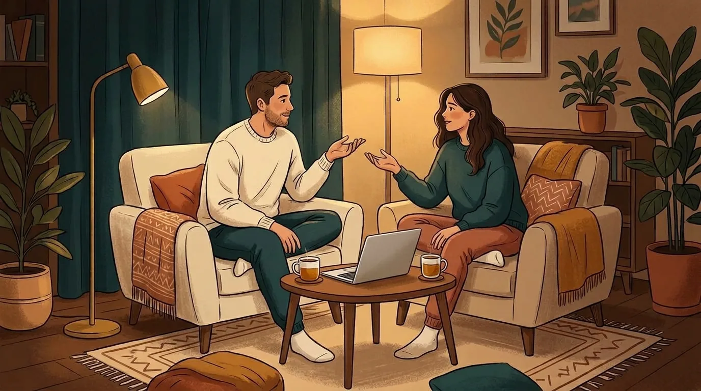

שיחה אחת בשבוע שמחזירה את התחושה שאתם באותו צד: פחות ויכוחים שמתפוצצים, יותר רגעים שבהם מרגישים שמקשיבים לכם. Couple Lab מנחה אתכם שלב אחר שלב בשיחות עומק, הערכה ותיקון אחרי ריב, וכל מה שנאמר נשאר על המחשב שלכם.

"מהו רגע קטן מהשבוע האחרון שבו הרגשת שאני באמת רואה אותך ואיתך?"
בחרו קלף שיחה אמיתי מתוך 17 החפיסות באפליקציה, או בדקו ב-3 שאלות קצרות איזו שיחה הכי מתאימה לכם הערב.
"מהו דבר אחד שעשיתי החודש — אפילו קטן מאוד — שגרם לך להרגיש שאנחנו צוות?"
דובר/ת: תנו דוגמה ספציפית ולא כללית. מקשיב/ה: לפני שעונים, שיקפו במשפט אחד מה שמעתם ואיך זה גורם לכם להרגיש.
כשכל אחד יודע שיש לו 2 דקות בלי שיפריעו לו, הרבה יותר קל להקשיב עד הסוף. באפליקציה המלאה התורות מתחלפות לבד.
באפליקציה כל אחד עונה לבד על 10 שאלות בפרטיות מלאה. הנה 3 שאלות שיראו לכם איפה כדאי להתחיל הערב:
נראה שהשגרה שואבת מכם המון אנרגיה. שיחה מונחית קצרה שבה כל אחד מקבל 5 דקות לשתף על השבוע שלו בלי שמנסים "לפתור" לו את הבעיה תוריד מיד את מפלס העומס.
כל כלי ב-Couple Lab תוכנן סביב רגעים אמיתיים שכל זוג פוגש: משתיקה מביכה בסוף יום עמוס ועד ויכוח שמתחמם מהר מדי.
במסלולי "אחרי ריב" ו-"שיחה מפחיתת לחץ", האפליקציה מחלקת את השיחה לשלבים קטנים וברורים. היא שומרת על התורות שלכם, מציגה משפטים מומלצים לפתיחה רכה (בלי האשמה) ומבקשת מהמקשיב לשקף לפני שהוא מגיב.
כשהגוף מוצף, קשה מאוד להקשיב באמת. הפסקה קצרה ומוסכמת מחזירה את היכולת לדבר: כפתור "אני צריך/ה הפסקה" עוצר מיד את ההקלטה וקובע חזרה בעוד 20 דקות, כדי שאף אחד לא ירגיש שנטשו אותו.
לחצו על הכפתור כדי לראות איך האפליקציה מרגיעה רגע סוער:
17 חפיסות שאלות: מהיכרות מחדש אחרי שנים יחד, דרך הערכה יומיומית, תשוקה ואינטימיות, ועד חלומות משותפים.
בהסכמת שניכם, השיחה מתומללת ישירות על המחשב (ללא אינטרנט) כדי שתוכלו לחפש "מה סיכמנו על...", ולראות איך רמת המתח מ-0 עד 10 יורדת בסוף השיחה.
בסיום השיחה תקבלו משוב בונה: כמה דיבר כל אחד, אילו רגעי הקשבה והערכה זוהו, וצעד מעשי אחד שתבחרו יחד לשבוע הקרוב (ניתן לשמירה כ-PDF).
היכרות ראשונית של 5 דקות (פעם אחת בלבד), ואז 15 דקות בשבוע שמשנות את האווירה בבית. לחצו על כל שלב להצצה למסך:
שיחה זוגית היא הדבר הכי אינטימי שיש. לכן בנינו את Couple Lab בלי שרתים, בלי הרשמה ובלי איסוף מידע. אתם יכולים לכבות את ה-Wi-Fi במחשב לגמרי — והאפליקציה, כולל התמלול וזיהוי הדוברים, תמשיך לעבוד באופן מלא.
Couple Lab נבנתה כפרויקט אישי ופתוח לקהילה (Open Source ברישיון MIT), ללא מטרות רווח, כדי לתת לכל זוג גישה לכלי תרגול זוגי איכותי ופרטי. אין מנוי נסתר ואין שום מידע למכור.
• זיהוי דוברים ללא שמירת תמונות: אם תבחרו שהאפליקציה תזהה מי מדבר, דגימות הקול והתמונה נמחקות מיד לאחר הלמידה, ונשמר רק וקטור מספרי המוצפן בהצפנת המשתמש של Windows (DPAPI).
• שדרוג תמלול ומודלים מקומיים (אופציונלי): התמלול המובנה פועל אופליין על המעבד המקומי. משתמשים מתקדמים שמותקן אצלם Ollama יכולים להפעיל תיקוני כתיב ופיסוק מקומיים, או לחבר מפתח API אישי בהגדרות (כבוי כברירת מחדל).
• שקיפות קוד מלאה: ניתן לבדוק כל שורת קוד במאגר הרשמי ב-GitHub.
מורידים קובץ יחיד, לוחצים פעמיים ומתחילים. אף שרת בעולם לא יודע שהורדתם או פתחתם את האפליקציה.
אפשר למחוק את קובץ השמע בסוף כל שיחה (ולהשאיר רק סיכום כתוב), או לאפס את הפרופיל הזוגי בלחיצה.
שום שיחה לא מוקלטת בלי ששני בני הזוג אישרו זאת יחד על המסך לפני תחילת התרגיל.
תשובות לשאלון "מפת הקשר" מוסתרות מבן או בת הזוג — מוצג רק המיפוי המשותף שמראה במה כדאי להתמקד.
Couple-Lab-Windows.exe (כ-185MB, מתאים ל-Windows 10 ו-11).
"לא צריך לחכות למשבר כדי להתחיל לדבר באמת"
זוגות שמתרגלים הקשבה כשטוב, מתמודדים הרבה יותר טוב כשקשה. שלושה רגעים טיפוסיים שבשבילם בנינו את Couple Lab:
הציטוטים הם תרחישים לדוגמה, לא ביקורות של משתמשים.
"אחרי שהילדים נרדמים היינו פשוט גוללים בטלפון אחד ליד השנייה. התחלנו לפתוח את Couple Lab פעם בשבוע ל-15 דקות עם כוס תה, וגילינו דברים שלא דיברנו עליהם שנים."
"תמיד אחרי ריב הייתה בינינו שתיקה מעיקה כי אף אחד לא ידע איך להתחיל לדבר בלי להצית הכל מחדש. המסלול של 'אחרי ריב' וניהול התורות באפליקציה פשוט עושה סדר ומרגיע."
"אנחנו בטיפול זוגי וכבר מכירים את המושגים של 'פתיחה רכה' ו'שיקוף', אבל בבית ברגע האמת היינו שוכחים. האפליקציה נותנת מסגרת קלה ובטוחה לתרגל בין הפגישות."
Couple Lab היא כלי לתרגול והעשרה זוגית בהשראת מחקרי גוטמן (אינה קשורה רשמית למכון גוטמן ואינה מחליפה טיפול זוגי או אבחון). בתחילת השימוש קיימת בדיקת בטיחות קצרה — במקרים של פחד, איומים או אלימות, האפליקציה עוצרת את התרגול ומפנה לסיוע מקצועי.